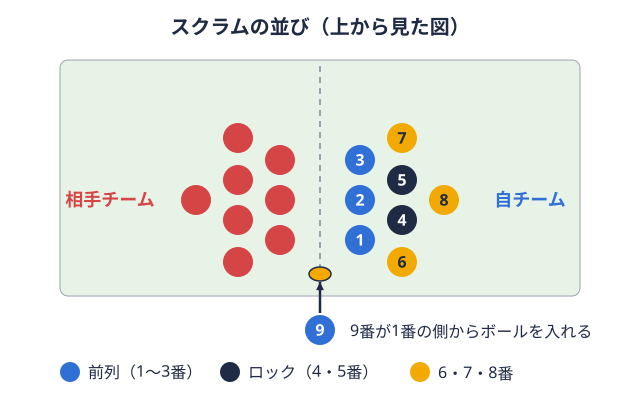
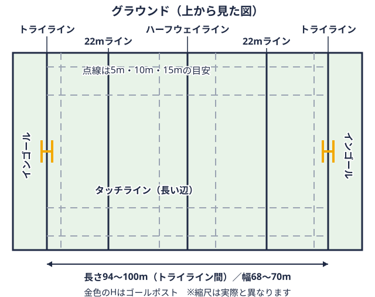

基礎知識 2026-11-25
ラグビーの反則の種類｜ペナルティとフリーキックの違いと再開方法
「ペナルティ反則への罰。反則を受けたチームがその場から再開でき、ゴールを狙って成功すれば3点が入る。 用語辞典で見るとフリーキックは、何が違うのか」。ラグビーを始めたばかりの部員や、観戦に来た保護者、新入生のマネージャーから、よく出る疑問です。笛が鳴ったあと、どちらのチームがどこから再開するのかが分かると、試合の見え方が変わります。
用語辞典で見るとフリーキックは、何が違うのか」。ラグビーを始めたばかりの部員や、観戦に来た保護者、新入生のマネージャーから、よく出る疑問です。笛が鳴ったあと、どちらのチームがどこから再開するのかが分かると、試合の見え方が変わります。
この記事では、ワールドラグビー（World Rugby）の公式解説と競技規則（英語版）で確認できた内容をもとに、反則の重さの違いと再開方法を整理します。そのうえで、部員が練習で反則を減らすための考え方もまとめます。
なお、競技規則は改正されることがあり、大会やカテゴリーによって適用が異なる場合があります。ここで書くのは、公式ページで確認できた範囲です。条項番号はワールドラグビーの英語版に基づくもので、日本の大会での扱いは、日本ラグビーフットボール協会（JRFU）の日本語版競技規則と大会要項で確認してください。
結論：反則は「ペナルティ」「フリーキック」「スクラム」の3つの再開に分かれる
ワールドラグビーの初心者向け解説では、次のように説明されています。
- ペナルティ：相手チームに「重大かつ大きな影響（material and significant impact）」を与える反則に与えられる
- フリーキック：それより軽微な反則に与えられる
この2つの最大の違いは、得点に直結するかどうかです。同じ解説には「フリーキックから直接得点することはできない（A team may not score points directly from a free-kick）」と書かれています。ペナルティを得たチームはゴールを狙うキックで3点を取れますが、フリーキックではそれができません。
さらに、反則ではなく「ボールが出ない」「誰の反則とも言えない」場面の再開はスクラム試合が止まったあとの再開方法。両チーム8人ずつが体を組み合わせて向かい合い、間に入れたボールを足で奪い合う。 
| 再開の種類 | 主な場面 | ゴールキックで得点できるか |
|---|---|---|
| ペナルティ | 重大な影響を与える反則（危険なタックルボールを持つ相手をつかんで地面に倒すプレー。倒したあとは、すぐにボールから離れなければならない。用語辞典で見る、ラック地面にあるボールの上で、両チーム1人以上が立ったまま組み合い、ボールを奪い合う状態。手は使えない。 用語辞典で見るでの反則など） 用語辞典で見るでの反則など） | できる（成功で3点） |
| フリーキック | 軽微な反則（スクラムの組み方の違反など） | できない |
| スクラム | 反則とは別の理由で再開する場面（ラックでボールが出ないとき、相手が選んだときなど） | 再開そのものでは得点できない |
ペナルティを得たチームが選べる4つの選択肢
ワールドラグビーの解説によると、ペナルティを得たチームは次のどれかを選びます。
- ゴールを狙う：ポストの射程内なら、ティーにボールを置いてポストの間かつクロスバーの上を狙って蹴ります。成功すれば3点です
- スクラムを選ぶ：競技規則20.3にも、ペナルティの場合はスクラムを選べる旨が示されています
- クイックペナルティ：すばやく再開して、そのまま攻撃を続けます
- タッチキック：ボールをタッチライングラウンドの長い辺に引かれた線。ボールや選手がこの線の外に出ると、プレーが止まる。

用語辞典で見るの外へ蹴り出し、ラインアウトボールが横のライン（タッチライン）の外に出たあとの再開方法。2列に並び、投げ入れたボールを取り合う。 用語辞典で見るのスローインの権利を得ます
用語辞典で見るのスローインの権利を得ます
どれを選ぶかは、点差、残り時間、風向き、キッカーの調子、FW背番号1〜8番の8人。スクラムを組み、体をぶつけてボールを確保するのが主な役目。 用語辞典で見るの得意分野などで変わります。大学の試合を見ていて「ここで蹴らないのか」と感じる場面があれば、それは選択肢のなかから別の手を選んでいる場面かもしれません。監督や主将が試合前にどういう方針を決めているかは外からは分かりませんので、観戦するときは「選べる」という事実だけ押さえておくと十分です。
用語辞典で見るの得意分野などで変わります。大学の試合を見ていて「ここで蹴らないのか」と感じる場面があれば、それは選択肢のなかから別の手を選んでいる場面かもしれません。監督や主将が試合前にどういう方針を決めているかは外からは分かりませんので、観戦するときは「選べる」という事実だけ押さえておくと十分です。
フリーキックを得たときの違い
フリーキックでは、ペナルティのようにゴールを狙って直接得点することはできません。ラインアウト中の反則の場合は、競技規則20.4で、ペナルティなら「同じ地点でのラインアウトまたはスクラム」、フリーキックなら「同じ地点でのラインアウト」のみ、と条文上は整理されています。
また、ペナルティ・フリーキックともに、反則した側のチームは、すぐに10メートル下がる必要があります（競技規則20.12）。クイックで再開された場合は、下がりきっていない選手がプレーに加われないといった細かな決まりもあります。下がらずに邪魔をすると、さらにペナルティやフリーキックが10メートル前進した地点で与えられるとされています。
反則のどれがペナルティで、どれがフリーキックか
ここからは、競技規則の英語版で確認できた範囲で、場面ごとに整理します。条項は2026年時点でワールドラグビーが公開している版を参照しており、日本語版と番号が一致するかは確認していません。
タックル周り（第14条）
タックル後の反則は、確認できた範囲ではすべてペナルティが基本です。
- タックルの高さが制裁ラインより上（14.5a）
- タックルしたあとにボールとボールキャリアーをすぐ放さない（14.5b）
- タックラーがすぐ離れるか立ち上がらない（14.5c）
- タックルされた選手が、ボールを離さず、パス・リリースなどの動きをしない（14.7a）
- 立っていない選手がボールに触れる（14.8b）
- ボールキャリアーがすぐにボールを動かさない（14.9a）
2026年8月27日付のJRFU通達では、タックルの制裁ラインについて、リーグワンは肩のライン、それ以外のコミュニティーラグビーは胸骨の下端部分と示されています。大学の各大会にどう適用されるかは大会要項で確認してください。詳しくはラグビーのルール改正【2026年最新】にまとめています。タックルの低い入り方はラグビーのタックル練習のコツも参考になります。
ラック周り（第15条）
ラックは反則の種類が多く、ペナルティとフリーキックが混在します。
- ペナルティ：ラックにサイドから入る、オフサイドラインオフサイドにならずにプレーに加われる境目の線。場面ごとに位置が決まっている。
 用語辞典で見るより前から参加する、バインド腕を使って、味方や相手の体につかまって組むこと。スクラムやラック、モールで必要になる。用語辞典で見る（腕で組むこと）より先に体に触れる、ラックの中で手を使う、故意にラックを崩す、など
用語辞典で見るより前から参加する、バインド腕を使って、味方や相手の体につかまって組むこと。スクラムやラック、モールで必要になる。用語辞典で見る（腕で組むこと）より先に体に触れる、ラックの中で手を使う、故意にラックを崩す、など - フリーキック：ラックに参加する際の姿勢（頭と肩が腰より低い）、ラックにボールを戻す行為、ラックが終わっていないのに終わったふりをする行為
- スクラム：レフリーが「ユーズイット」と声をかけたあと、5秒以内にボールをラックから出せない場合
最後のスクラムは、反則ではなく再開方法の一つです。「ユーズイット」の意味はラグビー用語集（初心者向け）で確認できます。ラックでボールを奪う動きの練習はラグビーのジャッカル練習ガイドも参考になります。
スクラム周り（第19条）
スクラムの反則は、ペナルティ、フリーキック、やり直しの3つに分かれます。
- フリーキック：クラウチの姿勢が低くない、頭の位置の違反、フッカー2番のポジション。スクラムの中央でボールを足でかき出し、ラインアウトでは投げ入れ役も務める。用語辞典で見るのブレーキフットがない、「セット」で準備ができていない、スクラムハーフ9番のポジション。人が固まった場所からボールを取り出し、味方へパスして攻撃を始める。用語辞典で見るがボールを入れる前に押す、ボールをまっすぐ入れない
- ペナルティ：バインドの違反、まっすぐ・地面と平行に押さない、故意にスクラムを崩す、故意に倒れる・ひざをつく
- やり直し：故意でないスクラムの崩れや、90度を超えて回ってしまった場合
スクラムは首や頭への負担も大きい場面のため、フリーキックの反則であっても安全に関わる内容が含まれます。ブレーキフットが正式な規則になった経緯は2026年ルール改正の記事で確認できます。組み方はラグビーのスクラム技術と練習方法にまとめています。
オフサイド（第10条）
ワールドラグビーの解説では、「オフサイドボールを持つ、または最後に触れた味方より前にいる状態でプレーに加わる反則。用語辞典で見るは試合中に最も多いペナルティ」とされています。オープンプレーでは、ボールを持っている、または最後に触った味方より前にいる選手がオフサイドの位置にいる、と整理されています。
反則と判断された場合は、相手チームが「反則地点でのペナルティ」か「スクラム」を選べるとされています。キックの場面では、キックした味方の前にいる選手が、すぐに味方の後ろか、ボールの落下地点から10メートル後ろまで下がる必要があります（10メートルルール、10.4c）。
ただし、通常のオフサイドの扱いでも、ボールに触れたり相手のプレーを妨げたりしていない場合は、レフリーがプレーを流すこともあります。観戦中に「前にいる選手がいたのに反則にならない」と感じても、必ずしも見逃しとは限りません。
危険なプレー・カード（第9条）
ワールドラグビーの競技規則第9条では、次の反則がペナルティの対象として示されています。
- 早い、遅い、危険なタックル（9.13）。頭部への接触、制裁ラインより上のタックル、ヒップドロップタックルを含みます
- ボールを持った選手へのチャージ（9.16）
- ラックやモールボールを持った選手を中心に、両チーム1人以上が立ったまま組み合い、持ち上げたボールを押し合う状態。用語辞典で見るへのチャージ（9.20a）
- 相手のタックルやボールへのプレーを故意に妨げる行為（オブストラクション）
一方、時間稼ぎ（9.7d）は、第9条のなかでフリーキックとされる例として確認できました。
反則の内容によっては、カードが出ます。
- イエローカード：警告のうえ10分間の一時的退場（9.29）。その後に同種のイエロー相当の反則があれば退場となる
- レッドカード重い反則をした選手に出される退場の合図。その選手は、その試合にもう出られない。用語辞典で見る：退場。通常は交替できない（9.30）
JRFUの2026年7月15日付の通達では、「20分レッドカードによる交替」を競技規則9.30として正式採用する旨が示されています。ただし、ワールドラグビーの条文ページでは、20分後に交替できるのはエリートラグビーの一部の場合と書かれており、大学の各大会でどう運用されるかは、この記事では確認できていません。試合前に主催者や審判団の説明を確認してください。頭部が関わる負傷が疑われる場面の対応は脳震盪対応と段階的競技復帰で整理しています。
「ペナルティかフリーキックか」を見分ける3つの目安
試合中に判断できるよう、目安を3つにまとめます。ただし、最終的にどちらになるかはレフリーの判断と競技規則によるため、あくまで見方の目安です。
- 安全に関わるか：タックルの高さ、スクラムやラックでの故意の崩し、危険なチャージなどは、ペナルティに分類されている例が多く確認できます
- ボール争奪の公平性に関わるか：ラックでの手の使用、立っていない選手のプレー、ボールを放さない行為も、ペナルティの例として確認できます
- セットプレースクラムやラインアウトのように、プレーが止まったあと決まった形で再開する場面。用語辞典で見るの手順や準備の問題か：スクラムのクラウチ姿勢、準備不足、ボールの入れ方などはフリーキックの例が目立ちます
反対に、目安にあてはまらない場合もあります。たとえばスクラムのバインド違反はペナルティ、スクラムの姿勢の違反はフリーキックと、同じスクラムの中で分かれています。条文を一つひとつ確認するのが確実です。
部員が反則を減らすための練習の視点
反則はレフリーとの駆け引きではなく、ルールの理解と身体の使い方の問題であることが多いです。ここからは、練習に落とし込む考え方です。なお、この節は競技規則の内容にもとづく編集部の整理で、チームの実績データや統計に基づくものではありません。
1. 反則の一覧を「自分のポジションの局面」だけ抜き出す
すべての条文を覚えるのは大変です。まず、自分が関わる局面だけを抜き出して確認します。
- FW：スクラムの姿勢、ラックの入り方（バインドとオフサイドライン）、モールの参加方法
- SH・SO：ラックの終わりのコール、オフサイドラインの位置、キック後のチェイス
- CTB・WTB・FB：オフサイドの位置、10メートルルール、タッチキック後のラインアウト
ポジション別の役割は、ラグビーのフッカー ラインアウト・スローイングなど、各ポジションの記事にもまとめています。
2. 練習試合のあとに、反則をペナルティとフリーキックに分けて振り返る
ビデオやレフリーのフィードバックがあれば、取られた反則をリストにして分類します。
- ペナルティだった反則：何回、どの局面（タックル後・ラック・オフサイド）で起きたか
- フリーキックだった反則：スクラムの手順に関するものが多いか
数をそろえて見るだけで、チームのクセが見えやすくなります。ただし、数回の練習試合で結論を出すのは早い場合があります。数試合分をまとめて傾向を見るのが無理のない進め方です。
3. レフリーの笛と声を練習に取り入れる
練習中に笛や「ユーズイット」のコールを使うと、試合に近い感覚で確認できます。レフリー役を部員が交代で務める練習もあります。審判の目線に立つと、自分の反則に気づきやすくなる場合があります。部員がレフリー資格を取る方法は、ラグビーのレフリー資格の取り方を参照してください。
4. ルール改正のたびに、チームで確認する時間をつくる
競技規則は毎年のように見直されます。新しいルールは、練習の中で知らないうちに反則になっていることがあります。チームで共有するときの確認ポイントは、ルール改正の記事のチェックリストも使えます。
観戦者向け：反則の知識を順位表と結びつけて見る
観戦者にとって、ペナルティの有無は試合の流れを左右します。ペナルティから3点を取れるのは、得点に直結するからです。試合を見るときは、ペナルティの場面で何を選んだかに注目すると、チームの方針が見えてくる場合があります。
自サイトでは、対象の大学リーグの結果を一次データとして公開しています。気になるチームが、どのような試合展開で勝ち点試合の結果に応じて与えられるポイント。シーズンの合計が多い順に順位が決まる。用語辞典で見るを重ねているかは、順位表と日程・結果から確認できます。
- 関東対抗戦関東の大学ラグビーの大会区分の一つ。Aグループ・Bグループに分かれて戦う。用語辞典で見るAグループ：順位表、日程・結果
- 関東リーグ戦関東の大学ラグビーのもう一つの大会区分。1部・2部など「部」に分かれて戦う。用語辞典で見る1部：順位表、日程・結果
ラグビーマニアが対象としているのは、関東（対抗戦A/B、リーグ戦1部・2部）、関西（A・Bリーグ）、九州（A〜D）の各リーグです。全国大学選手権のデータは対象外のため、この記事でも選手権での反則の傾向には触れていません。
初めて観戦する場合は、大学ラグビー観戦ガイドも合わせて読むと、会場での過ごし方までイメージしやすくなります。
この記事で確認できていないこと
誤解を避けるために、確認できていない点をまとめます。
- JRFUの2026年版競技規則（日本語版PDF）の条文そのもの。本稿の条項番号はワールドラグビー英語版の表記によるもので、日本語版との対応は確認していません
- 大学の各大会での、20分レッドカードの運用の細部
- カテゴリー別（高校・U19など）の国内独自の規則。年代別の補則が適用される場合があります
- 反則の件数や種類の統計。公式の集計を確認できていないため、「最も多い反則は〜」といった一般化は、ワールドラグビーの解説にある「オフサイドが最も多いペナルティ」以外には書いていません
ルールの解釈で迷ったときは、所属する地区協会の審判関係の窓口、またはJRFUの公式ページで確認するのが確実です。
まとめ
- ペナルティは「重大かつ大きな影響」を与える反則、フリーキックは「軽微な反則」への再開で、ゴールキックで直接得点できるのはペナルティだけ
- ペナルティを得たチームは、ゴールキック、スクラム、クイックペナルティ、タッチキックから選べる
- タックル周りの反則は確認できた範囲ではペナルティ中心、スクラム周りはペナルティとフリーキックが混在する
- ラックの終わりの「ユーズイット」後にボールを出せなければ、再開はスクラムになる
- イエローカードは10分間の一時的退場、レッドカードは退場で、20分レッドカードの運用は大会ごとに確認が必要
- 自分のポジションの局面に絞って反則を整理し、練習試合のあとに分類して振り返ると、取り組みやすい
出典
この部活・競技を応援したい方へ
取材してほしい部活を募集中
部活を続けながら、就活も進めたい方へ
体育会の学生のための就活相談です。無料で、メールアドレス・学年・所属の入力だけで始められます。